Koozie Insulated Tumbler
Designed to perform exceptionally well for your modern life, with a touch of fun.
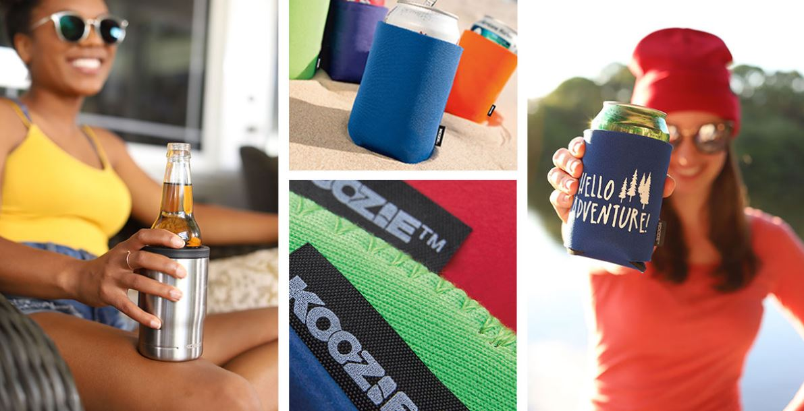While working for Koozie Group, I was tasked with designing the next generation of their proprietary insulated tumbler. Koozie had recently rebranded itself and wanted a modern, fun, yet functional everyday tumbler to reflect its brand identity.
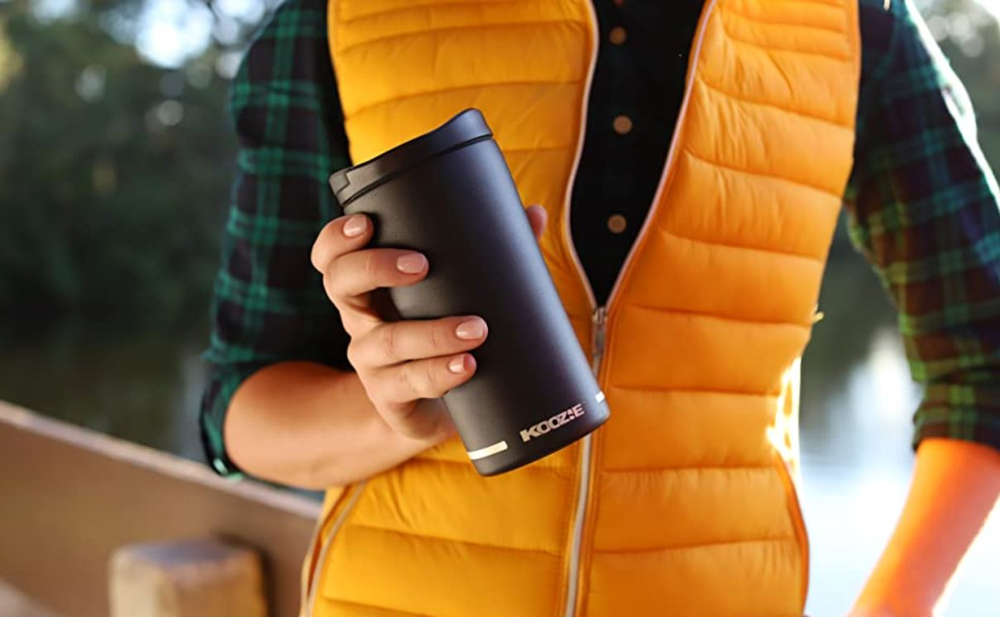Ideation

I began sketching initial concepts and ideas, exploring potential directions for the product and identifying the features and values that would best represent the brand. These initial concepts were then refined into a clear, tangible design that we chose to move forward with.
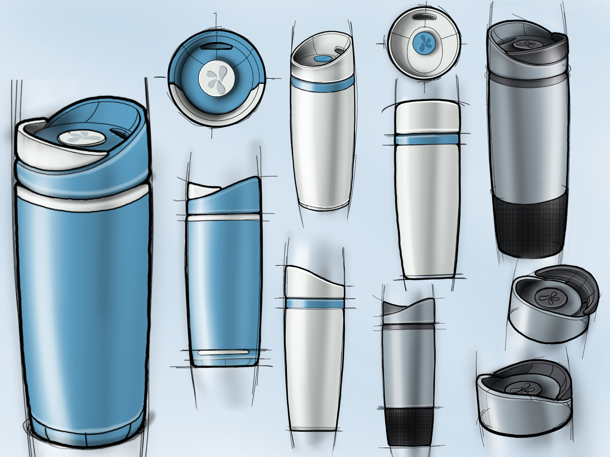 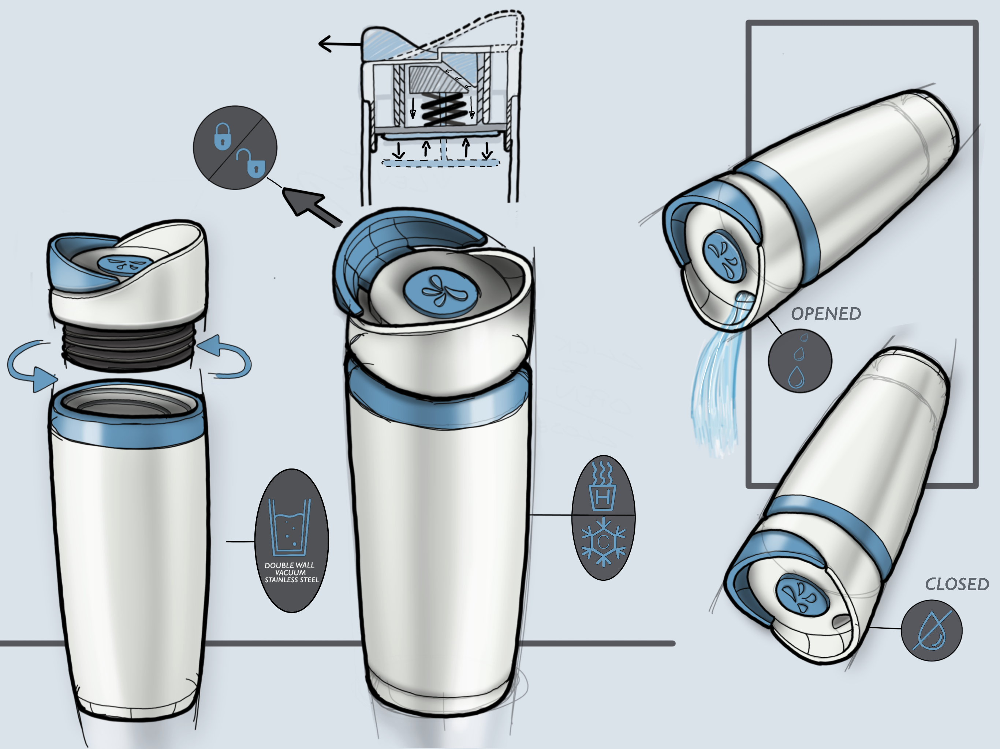Prototyping
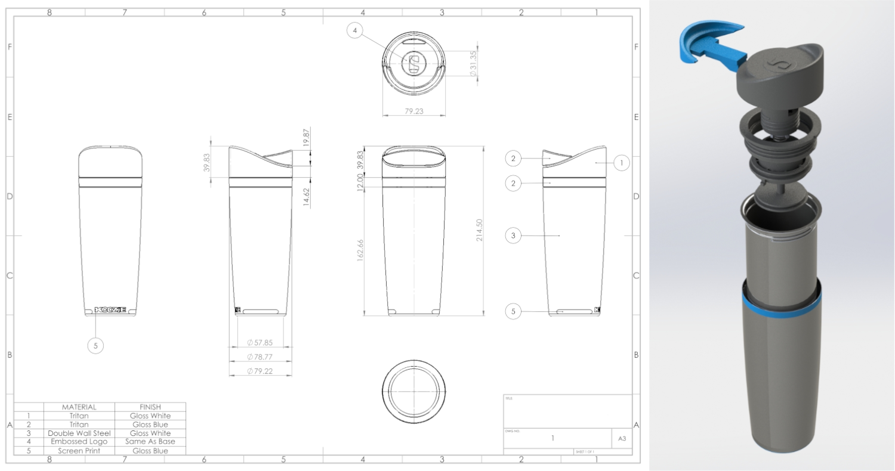A selection of concepts advanced to the prototype phase, where the designs were further refined. This process facilitated critical design decisions for the final concept, enabling us to move into manufacturing with confidence.
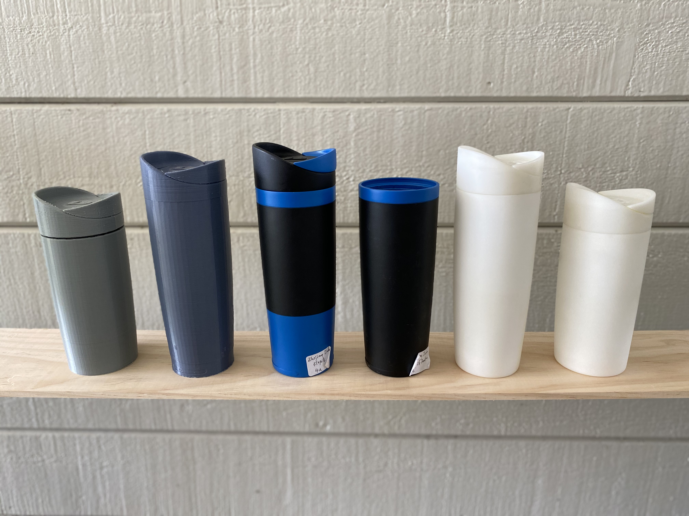 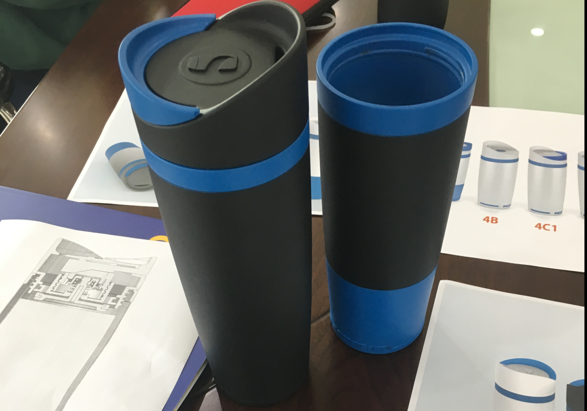 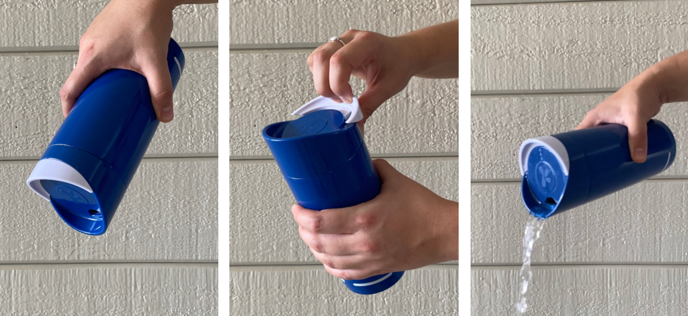Final Product
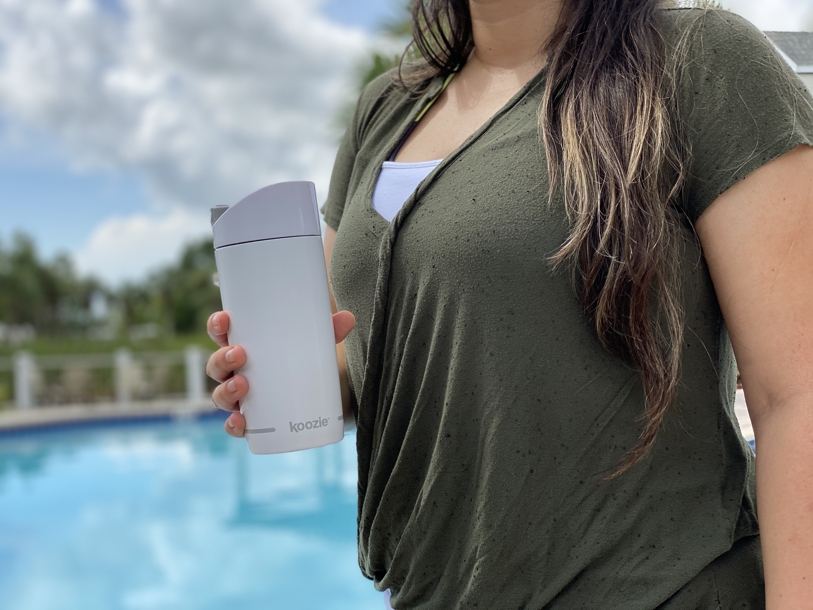 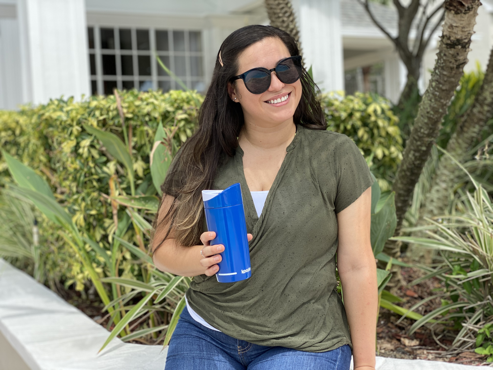 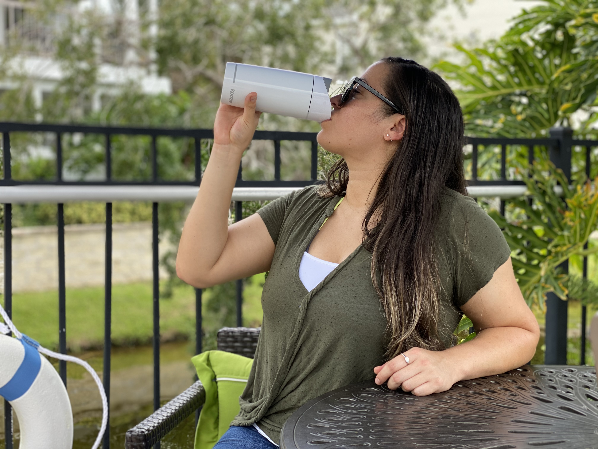 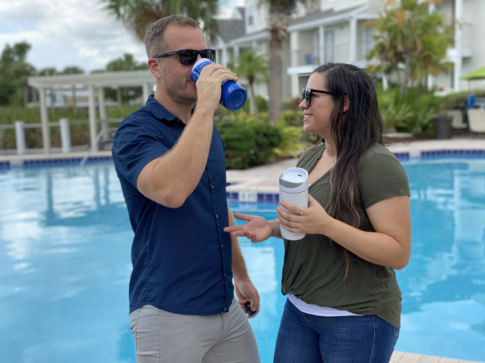 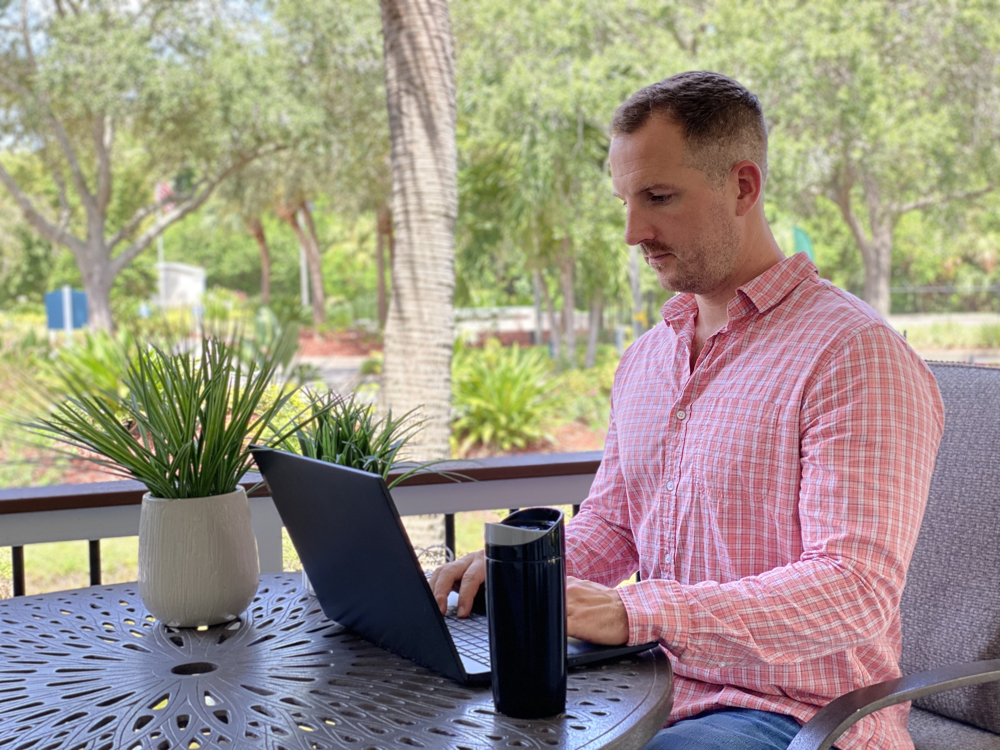www.kooziegroup.com